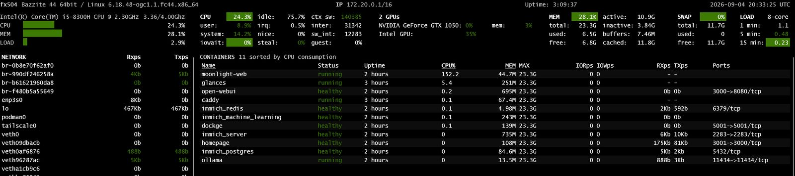
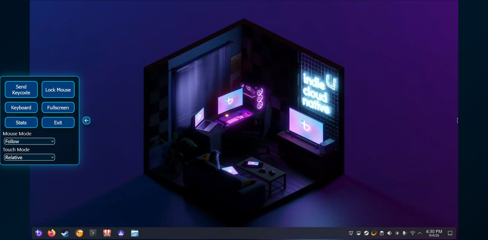
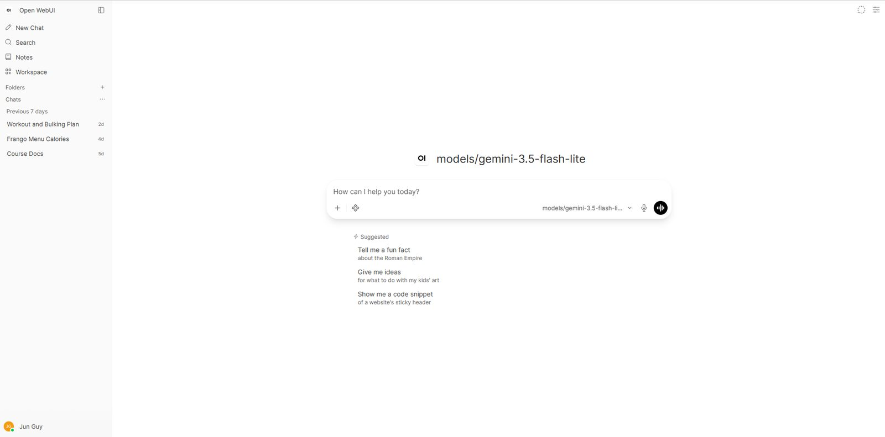
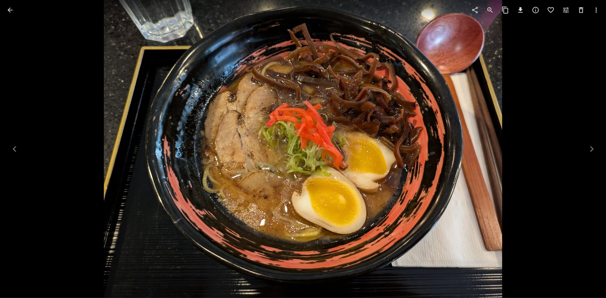

WhyWhy a laptop
It was a 2018 gaming laptop that would otherwise have gone in a drawer. It has a GPU, a battery that doubles as a UPS, and idles at almost nothing. The constraint I set was that it should behave like infrastructure, not a hobby box: the same names and certificates everywhere, recovery that's a checklist rather than a weekend, and a log of what broke and why.
DesignHow traffic gets to a service
The domain's DNS points at a private address on my LAN. That is the whole exposure model: off the network, the names resolve to nothing reachable. There is no port forwarding.
Caddy terminates TLS for every service with one wildcard certificate from Let's Encrypt, obtained through the DNS-01 challenge. DNS-01 proves control of the domain by writing a TXT record, so no inbound HTTP is needed and the host never has to be reachable from the internet to get or renew a certificate. Each service gets its own hostname and Caddy proxies it to the container, so nothing has a port number in its URL.
For remote access, Tailscale advertises a /32 subnet route: exactly this host, not the whole home network. A device on the tailnet resolves the same hostnames to the same private address and gets the same certificate, so the experience is identical at home and away. I looked at Headscale and NetBird and passed: both replace the control server rather than the client, which means the same battery cost plus a new public service to maintain.
RunsWhat runs
| Stack | What | Why it's here |
|---|---|---|
| caddy | Caddy, custom build | Reverse proxy and wildcard TLS. Built with xcaddy because the prebuilt image drops privileges and can't bind 443. |
| immich | Immich, Postgres, Redis, ML | Photo library, replacing a cloud subscription. Phone backs up over the HTTPS name. |
| ai | Ollama, Open WebUI | Local LLM inference on the GPU. See the incident below. |
| homepage | Homepage | The dashboard above, with live service health. |
| dockge | Dockge | Compose stack management from a browser. |
| glances | Glances | Host metrics. |
| moonlight-web | Moonlight Web, with Sunshine on the host | A roommate opens a URL and is driving the living-room TV from a browser. No app, no account. |
The OS is immutable: the base system is a read-only image, and a bad update is one rpm-ostree rollback away. All state lives in Compose volumes on the data drive, which is what makes the recovery runbook short.
ScreensWhat it looks like day to day

moonlight-web at 150% CPU encoding the desktop, the other ten containers idling. Two GPUs listed; the NVIDIA card is reserved for Ollama.


NextWhat's queued
Kubernetes. After the term ends, one Compose stack moves to k3s. The rest stay on Compose. Success or failure, it gets an incident-log entry.
eero. A Homepage widget pulling client and WAN status from the eero API, so the dashboard shows the network and not only the containers.
MCP server. A read-only server exposing container health, host metrics, the incident log, Immich counts, and Sunshine session state as tools for Claude Desktop over Tailscale. Five or six tools, deliberately: an earlier server with 41 tools cost 29% of the context window before a single message. One write tool, restarting a named container, with confirmation, and only after a month read-only.
IncidentsTwo from the log
The full log is in the repo. These two are the ones I'd tell in an interview.
The streaming host that exited cleanly and never came back
- symptom
- After every reboot the streaming service showed as running, but its port never bound.
systemctl statusshowed zero tasks. - cause
- The screen-capture portal wasn't ready when the service started. The process exited cleanly, so
Restart=on-failurenever fired. Not an encoder problem, which is what I chased first. - fix
- Order the unit after the portal and audio stack, then the real fix: a systemd timer that checks whether the port is listening, and restarts the unit if it isn't.
- rule
- Check outcomes, not process state. A clean exit defeats every restart policy you have.
Port 443 that worked on 8443
- symptom
- Caddy:
listen tcp :443: bind: permission denied. Same config on 8443 was fine. Then, once it bound, browsers timed out on 443 while 8443 still worked. - cause
- Two separate causes in a row. The third-party image dropped to an unprivileged user, and the bind capability didn't survive the drop. Then the desktop firewall zone, by default, doesn't open ports below 1024, and 80 and 443 live there.
- fix
- Build the Caddy image myself from the official builder with the DNS plugin, so it runs as intended and binds 443 natively. Open the http and https services in the firewall.
- rule
- Timeout means the firewall is dropping packets. Connection refused means nothing is listening. Different symptoms, different causes; read which one you got.
Not builtWhat I deliberately didn't build
- An AI agent on the host. I built one, measured it for a day, and removed it. It needed constant hand-holding and once reported success on work it never did. A scheduled report doesn't need a model. Written up in Notes.
- Public exposure. Anything that ever needs to be shared with someone off the network goes through a tunnel with its own authentication design first. The guest streaming setup is not allowed through as-is.
- VLANs. The router isn't mine. A firewall port inventory is the interim control; segmentation waits for hardware I control.